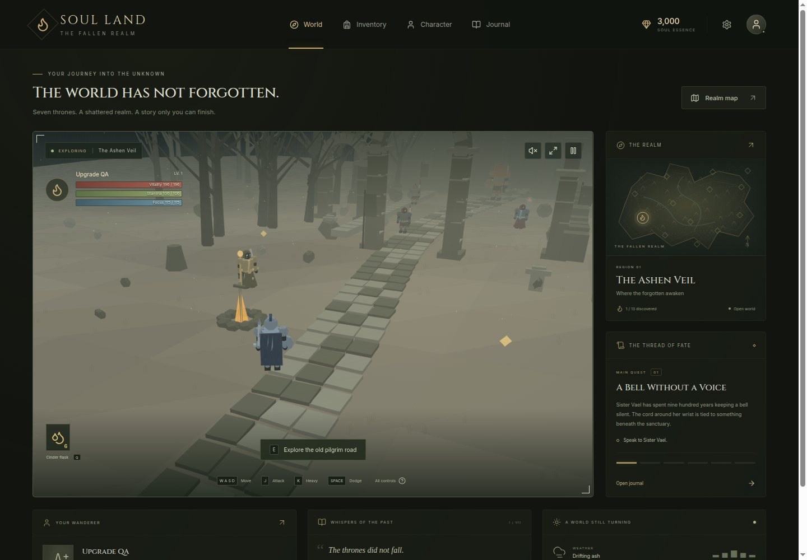
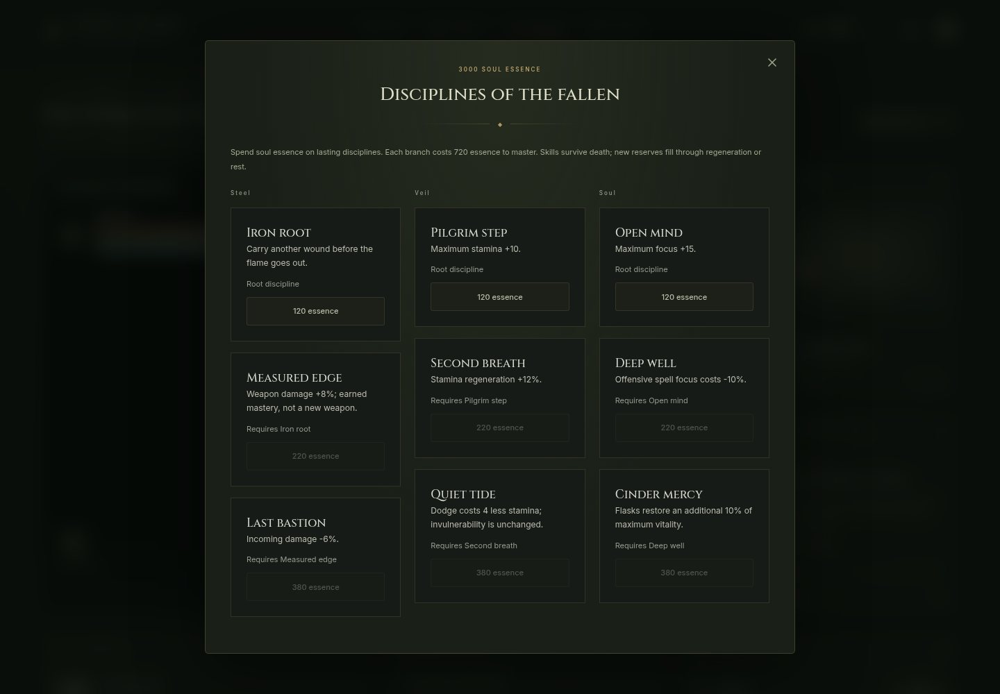
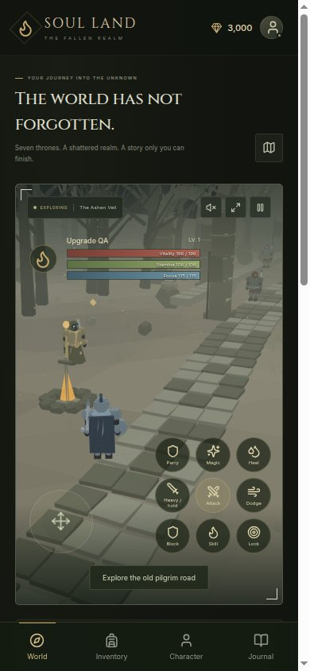

Haunted forest, fallen capital, wetland, glacier, crystal
undercity, volcano, glass desert, underground ocean, sacred ruins,
living archive, eclipse fortress and the fractured seat. Discover
roads, unlock sanctuary travel, read memorials and find hidden
caches.
Tactical action combat
Read committed telegraphs, manage stamina, roll through danger,
guard, parry and riposte. Heavy attacks break poise; guard
counters reward timing. Inputs buffer briefly during recovery;
dodge cancels open after an attack’s active hit.
Seven Soul Throne arcs
Defeat a throne guardian, recover its memorial and answer its
witness. Return to its region to resolve its fate in Journal →
Soul Thrones. Three irreversible choices per throne change
testimony and the final age. Sealed revelations stay hidden.
A persistent wanderer
Eight starting classes, eight attributes, nine skill disciplines,
sixteen weapon archetypes, forging, infusions, ten spells, four
fixed difficulties, six testimony chapters and seven conditional
conclusions. Earned progression survives death.
This is a compact procedural single-player RPG. Each region is an
encounter space with its own roster and rules; it is not a seamless
commercial-scale world. Dialogue is authored. No account is required.

Canvas fallback at desktop size. Screenshots show a synthetic test
journey; gameplay and interfaces are real.

Permanent skills cost earned soul essence.

Responsive touch layout. Physical phone performance still requires
testing.
Learn the rhythm
Control your own fate.
Defaults are listed below. Settings lets you rebind every gameplay
key; HUD hints update to match. Escape pauses. Dialogs support
keyboard focus navigation.
Action
Keyboard
Standard controller
Move / sprint
WASD or arrows / Shift
Left stick / L3
Light / heavy attack
J / K
X / Y
Charged follow-up
Hold J, then release
Hold X, then release
Dodge / backstep
Space / V
A / B
Guard / parry
Hold B / F
LB / LT
Weapon skill / spell
C / R
RB / RT
Jump attack / lock
X / Tab
View / R3
Heal / interact
Q / E
D-pad up / down
Pause
Escape
Menu
Phone: drag the left stick; its outer edge sprints.
Use the right action buttons and tap the interaction prompt. Hold
Heavy for a charged follow-up. Expand the game to use the screen.
Controller menus: stick or D-pad up/down moves focus,
A selects and B returns. Text entry uses keyboard or touch. The
browser may require one controller button press before detection.
Combat openings and fairness
Attacks resolve after startup. Range and facing matter; a missed
swing still costs stamina.
Inputs are buffered for 0.2 seconds. Dodges can cancel only the
last 28% of attack recovery, after its hit has resolved.
Light armour rolls have 0.46 seconds of invulnerability; heavy
armour has 0.30. Recovery is 0.60 seconds. These values never
change with difficulty.
Watch an enemy’s red, amber or magenta telegraph. Cones have a
safe rear, rings a safe center, marks commit to your former
position.
A successful block opens a short guard counter. Repeated attacks
can meet resistance, but never shorten a committed enemy windup.
Throne signatures can drain focus, seal flasks briefly, slow
movement, feed roots or leave a second visible hazard. Their
captions and HUD status explain the opening.
Steel · Veil · Soul
Power has a history.
Character → Disciplines opens three branches. Each root costs 120
essence, its next node 220 and its capstone 380. Skills survive death;
increased reserves fill through rest or regeneration. Skill
prerequisites and costs are enforced by the same pure rules used in
tests.
Throne powers are earned after the guardian, memorial and witness. All
three fates grant the same combat gift so narrative choices remain
yours. The fate changes its epilogue, the final age’s coda, and—when
boundaries are restored—the realm’s light and fog. Existing NPC
consequences, including Crownfall’s extra flask or stronger guard,
remain active.
Rarity describes a weapon’s origin, not hidden bonus damage.
Attributes, requirements, upgrades and infusions determine
performance. The deterministic balance model covers 128
class/difficulty/level combinations, limits combined skill/throne
damage and defence bonuses, and reports stamina and hit-count budgets.
It does not replace player testing.
Content editors: src/content/core.json contains classes,
equipment, spells, region lore and roads;
campaign.json testimony and dialogue;
regions.json rosters, hazards, lighting, music and
signatures; thrones.json choices;
skills.json the skill graph;
combat.json timing. Preserve region indices and save
identifiers when extending an existing journey.
The ember endures
Play after the sandbox sleeps.
The game is hosted on GitHub Pages, independently of this development
sandbox. Open the game online once and wait until Settings → Local
save says Offline ready. Its service worker caches
the game, lazy engine chunks, artwork, this guide and screenshots.
Then reopen the same address without a connection. Supported mobile
browsers can Add to Home Screen.
Autosave runs every two seconds and on page exit. Format-2 files
contain a schema-1 character, timestamp and corruption checksum.
Existing raw version-1 saves are accepted. If the primary snapshot
fails validation, the last good copy loads. Settings reports recovery.
Export a journey before clearing site data or changing devices.
Private browsing and storage quotas can prevent persistence.
Death drops unspent essence at the fall location. A second death
replaces the unrecovered drop. Levels, equipment, discoveries,
decisions and defeated guardians persist. Difficulty stays fixed for
that journey.
Export / Import in Settings transfers progress between browsers or
origins. Import replaces the current local journey. The transport can
support a future authenticated sync adapter; cloud synchronization is
not implemented.
Controls and atmosphere: rebinding, standard
controller gameplay and menu navigation,
contrast/color-vision/motion settings, brightness, audio buses,
positional effects, region scores and optional high-preset bloom.
Rendering and delivery: bounded ring pool, early
Canvas culling, reduced fallback ground detail, scene loading
feedback, lazy code, scoped offline cache and this field guide.
Validation: 49 automated checks, targeted browser scenarios and
production offline checks. Canvas gameplay baseline: median 66.8 ms /
p95 83.5 ms; first upgraded sample: median 66.7 ms / p95 83.5 ms. Mean
improved modestly in that sample. No hardware frame-rate guarantee is
claimed.
What comes next
More roads worth walking.
Physical Android/iOS and controller testing, GPU bloom verification
and measured device quality presets.
Full campaign playthroughs across difficulties and iterative
boss/loot tuning from player results.
More hand-authored spaces, faction schedules, optional encounters,
armour sets and voiced testimony.
Authenticated cloud sync with conflict resolution; settings and
transport are prepared, but no provider is connected.
Expanded animation blending, accessibility playtesting and broader
controller text-entry support.